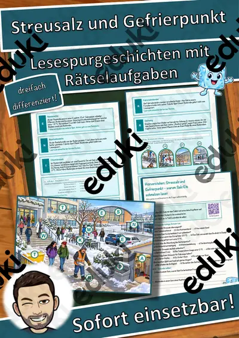

Säuren, Laugen und Salze: Arbeitsblätter für Klasse 8–10 (Chemie)
Säuren, Laugen und Salze sind Grundlagen der Chemie ab Klasse 8. Die Lernenden prüfen mit Indikatoren, erklären den pH-Wert und die Neutralisation.
Zum Themenkern zählen pH-Wert, Indikator und Säuren. Als Vertiefung bieten sich Laugen und Neutralisation an, am Ende steht oft Salze.
Je nach Bundesland variiert die genaue Einordnung; üblich ist das Fach Chemie in der Sekundarstufe I (Klasse 8–10). Die Jugendlichen testen Stoffe mit Indikatoren und erklären Neutralisation.
Wer Säuren, Laugen und Salze auf mehrere Stunden verteilt, startet mit pH-Wert, übt an Säuren und schließt mit Neutralisation ab. Alle Blätter sind kopierfertig und enthalten Lösungen für die schnelle Kontrolle. Leistungsstarke und schwächere Lesende erhalten über die Lesespurgeschichten Texte in drei Stufen.
Die Auswahl zum Thema umfasst derzeit 5 Titel, zum Beispiel Streusalz und Gefrierpunkt, Der Salzstock und Die Neutralisation. Dazu zählen 3 Lesespurgeschichten, 1 Prüfungstraining und 1 Lückentext mit Hörverstehen für Klasse 7–9. Rotkohlsaft als Indikator ist harmlos, preiswert und eindrucksvoll.
Das gehört zum Thema
Passende Arbeitsblätter und Materialpakete

Streusalz und Gefrierpunkt – warum Salz Eis schmelzen lässt – Lesespurgeschichte mit Rätselaufgaben (Klasse 8)

Der Salzstock – Lesespurgeschichte mit Rätselaufgaben (Klasse 9)

Die Neutralisation – Lesespurgeschichte mit Rätselaufgaben (Klasse 9)

Säuren und Basen – Prüfungstraining Chemie (Klasse 9)

Salz Lückentext mit Wortspeicher Hörverstehen und Suchsel
Häufige Fragen
Für welche Klassenstufe passen die Arbeitsblätter zu Säuren, Laugen und Salze?
Die 5 Materialien zu diesem Thema sind für Klasse 7–9 ausgelegt, die meisten davon für Klasse 9. Einzelne Titel lassen sich mit Anpassung auch eine Stufe darunter oder darüber einsetzen.
Welche Inhalte decken die Materialien zu Säuren, Laugen und Salze ab?
Inhaltlich reicht die Auswahl von pH-Wert über Indikator und Säuren bis zu Neutralisation; Details stehen bei den einzelnen Materialien.
Wie setze ich Säuren, Laugen und Salze im Unterricht ein?
Beginnen Sie mit einem Einstieg zu pH-Wert und ergänzen Sie nach Bedarf. Rotkohlsaft als Indikator ist harmlos, preiswert und eindrucksvoll.
Mehr Material nach Fach und Klasse
Verwandte Lehrplanthemen
- Atome, Elemente und Periodensystem (Chemie, Klasse 8–10)
- Stoffe und Aggregatzustände (Chemie, Klasse 5–9)
- Verbrennung, Feuer und Sauerstoff (Chemie, Klasse 5–9)
- Bewerbung und Praktikum (Deutsch, Klasse 8–10)